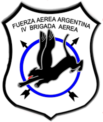

IV BRIGADA AEREA
navegacion - paginas - HISTORIA - REGLAMENTO - BUSCADOR
Historia
Reglamento
IV BRIGADA AEREA - CUNA DE LA AVIACION DE CAZA
UTILIDADES
correo institucional
webclient
GDE
PARTE DE NOVEDADES
GUIA DE TEL